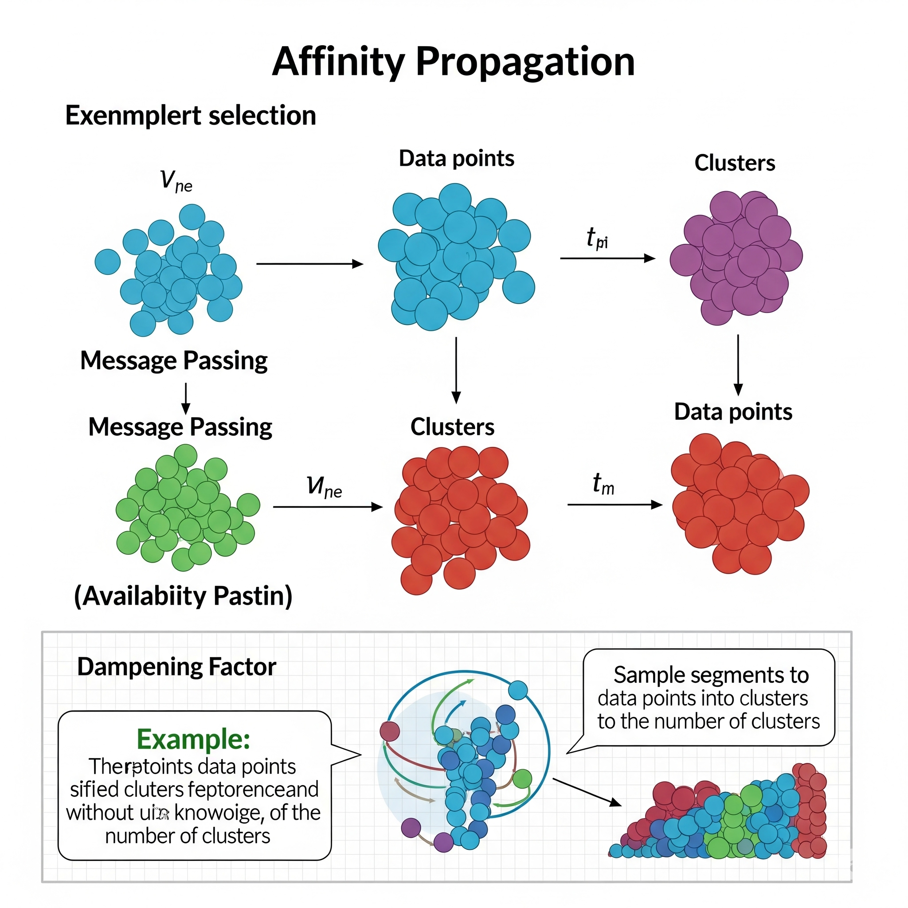
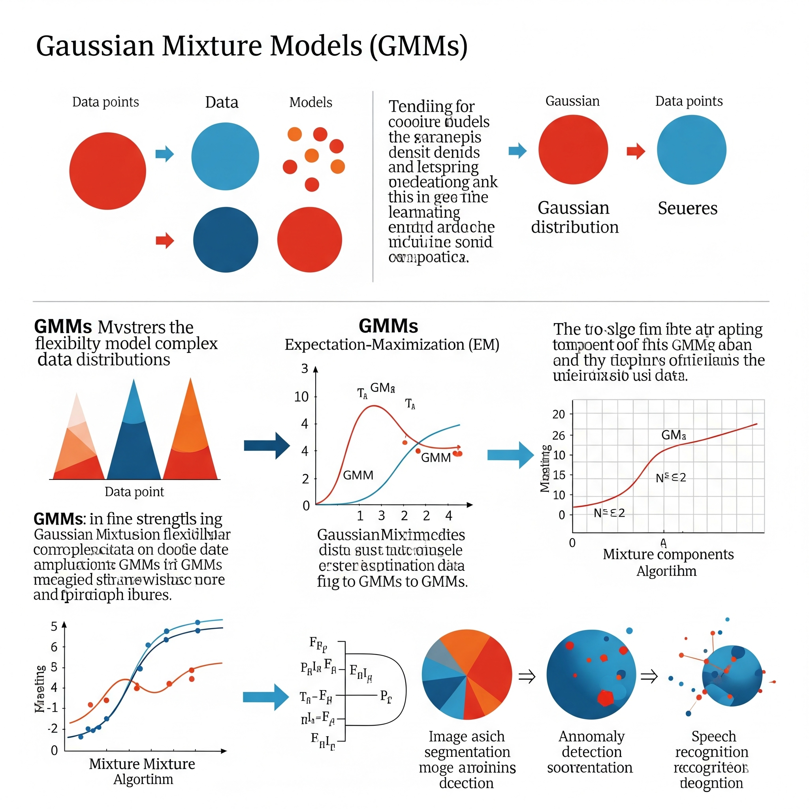
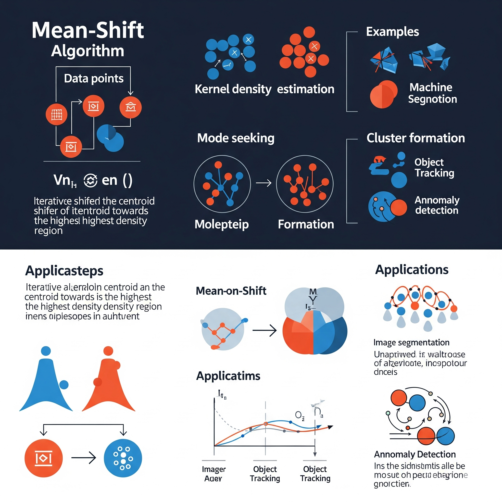
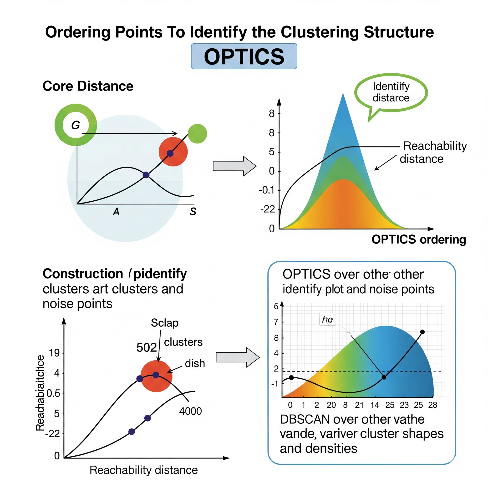

📠9. Clustering (Aprendizaje No Supervisado)
Ejemplos: K-Means, DBSCAN, Agrupamiento Jerárquico.
Uso: Excelente para agrupar datos sin etiquetas previas, permitiéndote descubrir estructuras ocultas o identificar segmentos de mercado dentro de tus conjuntos de datos. Es una herramienta clave en la exploración de datos.
Ventajas: Es increÁblemente útil para la exploración de datos y para reducir la complejidad al encontrar patrones inherentes.
Limitaciones: Generalmente, necesitas elegir el número de grupos de antemano (excepto en DBSCAN), lo cual puede ser un desafÁo. Además, algunos algoritmos pueden ser sensibles a la escala de las caracterÁsticas de tus datos.
Affinity Propagation

| GuÁa rápida para elegir Affinity Propagation |
| Agrupamiento Basado en el Paso de Mensajes |
| Criterio |
Aplica |
Detalles |
| Tipo de modelo |
✅ No Supervisado (Clustering) |
Algoritmo de clustering no supervisado que no requiere especificar el número de clústeres de antemano. Identifica 'ejemplares' (puntos de datos representativos) y agrupa otros puntos alrededor de ellos basándose en un proceso de 'paso de mensajes' entre todos los puntos. |
| Variable respuesta |
⌠No aplica directamente |
Affinity Propagation no tiene una 'variable respuesta'. Su objetivo es agrupar puntos de datos similares en clústeres, identificando automáticamente los centros de clúster (ejemplares). |
| Variables predictoras |
✅ Numéricas (o datos de similitud/distancia) |
Las variables de entrada deben ser numéricas para calcular las similitudes/distancias. Alternativamente, se le puede proporcionar directamente una matriz de similitud o distancia precalculada. |
| Relación entre variables |
✅ Muy compleja (determina prototipos y agrupaciones) |
Capta relaciones complejas al determinar la similitud entre cada par de puntos y luego pasar 'mensajes' de responsabilidad y disponibilidad para identificar ejemplares y asignaciones de clúster. No asume formas de clúster especÁficas (ej., esferas). |
| Normalidad de residuos |
⌠No es requisito |
No hace suposiciones sobre la normalidad de los residuos ni la distribución de los datos, ya que no es un modelo paramétrico de regresión o clasificación. |
| Independencia de errores |
⌠No aplica directamente |
El concepto de independencia de errores no aplica directamente. El algoritmo se basa en las interacciones y el paso de mensajes entre todos los puntos para determinar las agrupaciones. |
| Homoscedasticidad |
⌠No es requisito |
No asume homoscedasticidad. Las decisiones de agrupación se basan en similitudes y la identificación de ejemplares, no en la varianza constante. |
| Sensible a outliers |
âš ï¸ Sà (la elección de 'preferencia' es clave) |
SÁ, Affinity Propagation puede ser sensible a los outliers, especialmente a través de la elección del parámetro de 'preferencia'. Un outlier puede convertirse en un ejemplar si su preferencia es alta, o influir en las similitudes si no se maneja adecuadamente. Puede crear clústeres de un solo miembro si hay muchos outliers. |
| Multicolinealidad entre predictores |
✅ Maneja bien (si la similitud es adecuada) |
Maneja bien la multicolinealidad, siempre y cuando la métrica de similitud subyacente (ej., similitud euclidiana, si es el caso) sea adecuada para los datos. El algoritmo se enfoca en las relaciones de similitud entre puntos, no en las relaciones directas entre caracterÁsticas. |
| Interpretabilidad |
✅ Moderada (los 'ejemplares' son interpretables) |
La interpretabilidad es moderada a alta. Los centros de los clústeres son puntos de datos reales ('ejemplares'), lo que facilita su inspección y comprensión. Esto puede ser una gran ventaja en aplicaciones donde la representatividad es clave. |
| Velocidad y eficiencia |
âš ï¸ Baja (costo computacional cuadrático) |
La velocidad y eficiencia son bajas. La complejidad computacional de Affinity Propagation es O(N^2 * log N) o O(N^2) en el número de muestras (N), lo que la hace poco práctica para datasets con más de unos pocos miles de puntos. El pre-procesamiento para reducir el número de puntos es a menudo necesario para grandes datasets. |
| Validación cruzada |
⌠No aplica directamente (evaluación de la coherencia del clúster) |
La validación cruzada no se aplica directamente en el clustering, ya que no hay etiquetas verdaderas para predecir. La evaluación se realiza utilizando métricas de coherencia de clúster (ej., coeficiente de silueta) o comparando con agrupaciones conocidas si se tienen etiquetas de referencia (Ándice de Rand ajustado, V-measure). |
| No funciona bien si... |
⌠Datasets muy grandes, ruido excesivo, significado de distancias no euclidianas |
No funciona bien si: 1) el **dataset es muy grande** debido a su alta complejidad computacional, 2) hay **mucho ruido** que dificulta la identificación de similitudes reales, 3) la estructura de clústeres es muy difusa, o 4) la elección del parámetro de 'preferencia' (que controla el número de clústeres) es difÁcil de ajustar para el dominio especÁfico. |
Agglomerative Clustering
| GuÁa rápida para elegir Agglomerative Clustering |
| Agrupamiento Jerárquico Ascendente |
| Criterio |
Aplica |
Detalles |
| Tipo de modelo |
✅ No Supervisado (Clustering Jerárquico) |
Algoritmo de clustering no supervisado que construye una jerarquÁa de clústeres. Comienza con cada punto de datos como su propio clúster y fusiona iterativamente los pares de clústeres más similares hasta que todos los puntos estén en un solo clúster o se alcance un criterio de parada. El resultado es un dendrograma. |
| Variable respuesta |
⌠No aplica directamente |
Agglomerative Clustering no tiene una 'variable respuesta'. Su objetivo es identificar grupos naturales de puntos de datos y la relación jerárquica entre ellos. |
| Variables predictoras |
✅ Numéricas (o datos de distancia) |
Las variables de entrada deben ser numéricas para calcular las distancias (o similitudes). Es crucial escalar las caracterÁsticas adecuadamente antes de calcular las distancias. |
| Relación entre variables |
✅ Muy compleja (estructura anidada de clústeres) |
Capta relaciones complejas al organizar los datos en una estructura de árbol anidada (dendrograma), lo que permite visualizar agrupaciones en diferentes niveles de granularidad. No asume formas de clúster especÁficas (ej., esferas). |
| Normalidad de residuos |
⌠No es requisito |
No hace suposiciones sobre la normalidad de los residuos ni la distribución subyacente de los datos, ya que no es un modelo paramétrico. |
| Independencia de errores |
⌠No aplica directamente |
El concepto de independencia de errores no aplica directamente. El algoritmo se basa en las distancias entre puntos y clústeres para realizar fusiones. |
| Homoscedasticidad |
⌠No es requisito |
No asume homoscedasticidad. Las decisiones de agrupación se basan en la proximidad o la conexión entre clústeres, no en la varianza constante. |
| Sensible a outliers |
âš ï¸ Sà (puede distorsionar las uniones) |
SÁ, Agglomerative Clustering es sensible a los outliers. Un punto anómalo puede permanecer como un clúster de un solo miembro durante mucho tiempo o, si se une, puede forzar una unión subóptima y distorsionar la estructura del clúster a niveles superiores. El ruido puede afectar las distancias y, por lo tanto, las fusiones. |
| Multicolinealidad entre predictores |
✅ Maneja bien (si la distancia es adecuada) |
Maneja bien la multicolinealidad, siempre y cuando la métrica de distancia subyacente sea adecuada para los datos. El algoritmo se enfoca en las relaciones de distancia entre puntos, no en las relaciones directas entre caracterÁsticas. |
| Interpretabilidad |
✅ Muy alta (a través del dendrograma) |
La interpretabilidad es **muy alta** debido a la generación del dendrograma. Este árbol visual permite al usuario entender cómo se forman los clústeres a diferentes niveles de similitud y elegir el número de clústeres 'óptimo' cortando el árbol. |
| Velocidad y eficiencia |
âš ï¸ Baja (costo computacional alto) |
La velocidad y eficiencia son bajas. Su complejidad computacional es tÁpicamente O(N^3) en el número de muestras (N) debido a la recalculación de distancias en cada paso, o O(N^2) si se usa una matriz de distancia precalculada. Esto lo hace poco práctico para datasets con más de unos pocos miles de puntos. |
| Validación cruzada |
⌠No aplica directamente (evaluación de la coherencia) |
La validación cruzada no se aplica directamente en el clustering, ya que no hay etiquetas verdaderas para predecir. La evaluación se realiza utilizando métricas de coherencia de clúster (ej., coeficiente de silueta) o comparando con agrupaciones conocidas si se tienen etiquetas de referencia (Ándice de Rand ajustado, V-measure). |
| No funciona bien si... |
⌠Datasets muy grandes o ruido excesivo |
No funciona bien si: 1) el **dataset es muy grande** debido a su alta complejidad computacional y requisitos de memoria, 2) hay **mucho ruido** que puede llevar a fusiones incorrectas en los niveles iniciales, o 3) no hay una estructura jerárquica clara en los datos, haciendo que el dendrograma sea menos informativo. |
Density-Based Spatial Clustering of Applications with Noise (DBSCAN)
DBSCAN (Density-Based Spatial Clustering of Applications with Noise) es un algoritmo de agrupamiento (clustering) no supervisado que se distingue de los algoritmos basados en centroides (como k-Means) por su capacidad para encontrar clusters de formas arbitrarias y para identificar puntos de ruido (outliers). Su idea central es que los clusters son regiones densas de puntos en el espacio de caracterÁsticas, separadas por regiones de baja densidad.
DBSCAN define tres tipos de puntos:
-
Punto Núcleo (Core Point): Un punto es un punto núcleo si, dentro de un radio especificado (\(\epsilon\) o
eps), contiene un número mÁnimo de otros puntos ( MinPts).
-
Punto Frontera (Border Point): Un punto es un punto frontera si está dentro del radio \(\epsilon\) de un punto núcleo, pero no es un punto núcleo en sà mismo (no tiene
MinPts vecinos dentro de su propio radio \(\epsilon\)).
-
Punto de Ruido (Noise Point): Cualquier punto que no es un punto núcleo ni un punto frontera. Estos puntos son considerados outliers.
El algoritmo de DBSCAN opera de la siguiente manera:
-
Inicialización: Selecciona un punto arbitrario del conjunto de datos que aún no ha sido visitado.
-
Expansión de Cluster:
- Si el punto seleccionado es un punto núcleo, se inicia un nuevo cluster. Todos sus vecinos dentro del radio \(\epsilon\) se añaden al cluster.
- Recursivamente, se visitan y añaden los vecinos de esos nuevos puntos. Si un vecino es también un punto núcleo, sus propios vecinos también se añaden al cluster. Este proceso continúa hasta que no se puedan añadir más puntos al cluster (es decir, todos los puntos alcanzables por densidad han sido encontrados).
- Si el punto seleccionado no es un punto núcleo, se marca como ruido (o se deja para ser procesado más tarde si es un punto frontera de otro cluster ya formado).
-
Iteración: El proceso se repite con otro punto no visitado hasta que todos los puntos han sido procesados.
DBSCAN es particularmente útil para encontrar clusters complejos en conjuntos de datos ruidosos y no requiere que el usuario especifique el número de clusters de antemano. Sus dos hiperparámetros clave son eps (el radio de búsqueda de vecindad) y MinPts (el número mÁnimo de puntos para formar un núcleo).
Aprendizaje Global vs. Local:
DBSCAN es un algoritmo de agrupamiento inherentemente local, aunque el resultado final es una partición global de los datos en clusters y ruido.
Aspecto Local: El corazón de DBSCAN reside en la definición de densidad local y la conectividad. Las decisiones sobre si un punto es un núcleo, un frontera o ruido, y si dos puntos pertenecen al mismo clúster, se basan exclusivamente en la densidad de puntos en un vecindario muy localizado definido por el radio \(\epsilon\) y el MinPts. El algoritmo “expande†los clústeres al moverse de un punto núcleo a sus vecinos, y de estos a sus vecinos, y asà sucesivamente. Esta capacidad de crecer y formar clústeres orgánicamente a partir de las densidades locales es lo que permite a DBSCAN descubrir formas arbitrarias y adaptarse a la estructura local de los datos. No hay una función global o centroides predefinidos que guÁen la agrupación; todo se deriva de las propiedades de densidad local.
Resultado Global (Partición): Aunque el proceso es local, el resultado final es una partición global del conjunto de datos en varios clústeres y un conjunto de puntos de ruido. Una vez que todos los puntos han sido procesados y los clústeres expandidos, se obtiene una vista global de la estructura de agrupamiento.
| GuÁa rápida para elegir DBSCAN |
| Density-Based Spatial Clustering of Applications with Noise (DBSCAN) |
| Criterio |
Aplica |
Detalles |
| Tipo de modelo |
⌠No supervisado (clustering) |
Algoritmo de clustering basado en densidad que agrupa puntos cercanos y marca puntos aislados como ruido. |
| Variable respuesta |
⌠No aplica (no hay variable respuesta) |
No busca predecir, sino agrupar observaciones. |
| Variables predictoras |
✅ Numéricas (distancias euclidianas u otras métricas) |
Se basa en distancias; variables numéricas adecuadas; variables categóricas necesitan transformación. |
| Relación entre variables |
✅ Detecta clusters basados en densidad, no forma lineal |
No asume formas de clusters lineales ni convexas; puede detectar clusters arbitrarios. |
| Normalidad de residuos |
⌠No aplica |
No genera residuos; no aplica normalidad. |
| Independencia de errores |
⌠No aplica |
No hay modelo de error residual, no aplica independencia. |
| Homoscedasticidad |
⌠No aplica |
No es un modelo predictivo, no aplica homoscedasticidad. |
| Sensible a outliers |
✅ Robusto a outliers (los detecta como ruido) |
Detecta outliers etiquetándolos como ruido, siendo robusto frente a ellos. |
| Multicolinealidad entre predictores |
âš ï¸ No afecta directamente (no hay predictores) |
No hay predictores en sentido tradicional, por lo que multicolinealidad no afecta. |
| Interpretabilidad |
âš ï¸ Clusters pueden ser arbitrarios, pero es intuitivo identificar ruido |
Interpretación basada en grupos densos y puntos aislados (ruido). |
| Velocidad y eficiencia |
✅ Razonablemente rápido para conjuntos medianos |
Es eficiente, aunque su rendimiento puede disminuir en alta dimensionalidad. |
| Validación cruzada |
⌠No usa validación cruzada clásica; se evalúa con métricas de clustering |
No utiliza validación cruzada estándar; evaluación se basa en Ándices de clustering como Silhouette. |
| No funciona bien si... |
⌠No funciona bien con clusters de densidades muy diferentes o alta dimensionalidad |
Dificultades con clusters con diferentes densidades y cuando la dimensionalidad es muy alta. |
Expectation Maximization (EM)
El algoritmo Expectation-Maximization (EM) es un método iterativo utilizado en estadÁstica para encontrar las estimaciones de máxima verosimilitud (MLE) o las estimaciones de máxima a posteriori (MAP) de los parámetros en modelos estadÁsticos, especialmente cuando el modelo depende de variables latentes (no observadas o “ocultas”) o cuando los datos están “incompletos”.
EM es particularmente útil para modelos de mezcla, donde se asume que los datos observados son una mezcla de varias distribuciones subyacentes, y la pertenencia de cada punto de datos a una distribución especÁfica es la variable latente. El algoritmo consta de dos pasos principales que se alternan hasta la convergencia:
-
Paso E (Expectation Step - Paso de Expectativa):
- En este paso, dadas las estimaciones actuales de los parámetros del modelo, se calculan las probabilidades esperadas (o “responsabilidades”) de que cada punto de datos observado pertenezca a cada una de las componentes latentes (o de que las variables latentes tomen ciertos valores).
- Esencialmente, se está haciendo una “suposición†sobre los valores de las variables latentes basándose en los parámetros actuales del modelo y los datos observados.
-
Paso M (Maximization Step - Paso de Maximización):
- En este paso, utilizando las “responsabilidades†calculadas en el Paso E (tratándolas como si fueran observaciones completas), se re-estiman los parámetros del modelo para maximizar la verosimilitud esperada.
- Esto es tÁpicamente un problema de optimización más simple que el problema original de máxima verosimilitud con datos incompletos. Se ajustan los parámetros (ej., medias, varianzas, pesos de mezcla) para que el modelo se ajuste mejor a los datos, considerando las asignaciones “blandas†a las variables latentes.
Los Pasos E y M se repiten iterativamente. La verosimilitud del modelo está garantizada para no disminuir en cada iteración, y el algoritmo converge a un máximo local de la función de verosimilitud.
Aplicaciones comunes:
* Modelos de Mezcla Gaussiana (GMMs): Un uso prototÁpico del EM para el clustering no supervisado.
* Modelos Ocultos de Markov (HMMs): Para problemas de reconocimiento de voz y bioinformática.
* Imputación de datos faltantes: Para estimar valores faltantes en un conjunto de datos.
* Análisis de componentes latentes.
Aprendizaje Global vs. Local:
El algoritmo Expectation-Maximization (EM) es un método de aprendizaje global, pero es importante entender un matiz sobre su convergencia.
Aspecto Global: EM tiene como objetivo encontrar los parámetros de un modelo probabilÁstico global (como un GMM completo que describe la distribución de todo el conjunto de datos) que maximicen la verosimilitud de los datos observados. Los parámetros que se estiman (medias, covarianzas, pesos de mezcla en un GMM) son válidos para todo el espacio de caracterÁsticas. El algoritmo itera sobre todo el conjunto de datos en cada paso E y M para actualizar estos parámetros globales. La solución que busca EM es una representación unificada y global de las distribuciones subyacentes de los datos.
Convergencia a Máximos Locales: Aunque EM busca una solución global, una limitación crÁtica es que solo está garantizado para converger a un máximo local de la función de verosimilitud, no necesariamente al máximo global. Esto significa que el resultado final puede depender de la inicialización de los parámetros del modelo. Si la función de verosimilitud tiene múltiples “picos†(máximos locales), EM puede quedar “atrapado†en uno de ellos. Para mitigar esto, es una práctica común ejecutar EM varias veces con diferentes inicializaciones aleatorias y seleccionar el resultado con la verosimilitud más alta.
Por lo tanto, mientras que el objetivo de EM es aprender un modelo global que abarque todo el espacio de datos, su método iterativo de optimización lo hace susceptible a encontrar óptimos locales en la función de verosimilitud. La forma en que un modelo probabilÁstico como un GMM puede modelar relaciones no lineales en los datos es que, al combinar múltiples distribuciones gaussianas (lineales), el modelo resultante puede capturar formas y densidades complejas y no lineales en el espacio de caracterÁsticas. EM es el algoritmo que permite aprender estos componentes subyacentes.
| GuÁa rápida para elegir EM |
| Expectation Maximization (EM) |
| Criterio |
Aplica |
Detalles |
| Tipo de modelo |
⌠No supervisado (estimación de parámetros en modelos con datos incompletos o mixtos) |
Algoritmo iterativo para estimar parámetros de modelos estadÁsticos con datos faltantes o variables latentes. |
| Variable respuesta |
⌠No aplica directamente (modelo probabilÁstico) |
No genera predicciones directas, sino estima parámetros para modelos probabilÁsticos. |
| Variables predictoras |
✅ Variables numéricas o categóricas según modelo |
Aplicable a datos numéricos o categóricos dependiendo del modelo (mezcla de Gaussianas, por ejemplo). |
| Relación entre variables |
✅ Estima parámetros máximos de verosimilitud, puede manejar modelos complejos |
Maximiza la función de verosimilitud de manera iterativa, estimando variables latentes y parámetros. |
| Normalidad de residuos |
âš ï¸ Depende del modelo especÁfico usado con EM |
La normalidad depende del modelo (por ejemplo, mezcla de Gaussianas asume normalidad). |
| Independencia de errores |
âš ï¸ Depende del modelo; errores independientes si asume modelo estadÁstico clásico |
Si el modelo asume errores independientes, entonces sÁ; depende del modelo estadÁstico usado. |
| Homoscedasticidad |
âš ï¸ Depende del modelo estadÁstico subyacente |
Homoscedasticidad depende del modelo estadÁstico subyacente. |
| Sensible a outliers |
âš ï¸ Puede ser sensible a outliers dependiendo del modelo y datos |
Sensibilidad a outliers varÁa según la robustez del modelo y datos. |
| Multicolinealidad entre predictores |
âš ï¸ Depende del modelo y las variables involucradas |
Multicolinealidad afecta según la estructura del modelo y variables involucradas. |
| Interpretabilidad |
âš ï¸ La interpretación depende del modelo y parámetros estimados |
Interpretación es sobre parámetros estimados y variables latentes, no sobre coeficientes directos. |
| Velocidad y eficiencia |
⌠Puede ser lento si el modelo es complejo o datos muy grandes |
Puede requerir muchas iteraciones, afectando velocidad en modelos complejos. |
| Validación cruzada |
⌠Validación cruzada depende del modelo, no es intrÁnseco a EM |
La validación cruzada depende del modelo aplicado tras la estimación por EM. |
| No funciona bien si... |
⌠Puede converger a máximos locales; requiere buen punto inicial y modelo adecuado |
Puede quedarse atrapado en soluciones subóptimas; se recomienda múltiples inicios. |
Gaussian Mixture Models (GMMs)

| GuÁa rápida para elegir Gaussian Mixture Models (GMMs) |
| Modelos de Mezclas Gaussianas para Clustering y Estimación de Densidad |
| Criterio |
Aplica |
Detalles |
| Tipo de modelo |
✅ No Supervisado (Clustering, Estimación de Densidad) |
Modelo de probabilidad que representa la distribución de un conjunto de datos como una suma ponderada de varias distribuciones Gaussianas (normales). Se utiliza principalmente para clustering probabilÁstico y estimación de densidad. |
| Variable respuesta |
⌠No aplica directamente |
GMMs no tienen una 'variable respuesta'. Su objetivo es modelar la distribución subyacente de los datos y agruparlos en 'componentes Gaussianos', donde cada punto pertenece a cada clúster con una cierta probabilidad. |
| Variables predictoras |
✅ Numéricas |
Las variables de entrada deben ser numéricas. Es importante escalar las caracterÁsticas para asegurar que las métricas de distancia y covarianza se interpreten correctamente. |
| Relación entre variables |
✅ Muy compleja (modelado probabilÁstico de formas de clúster) |
Capta relaciones muy complejas y no lineales al modelar clústeres de forma elÁptica o esférica con diferentes centros, varianzas y orientaciones. Permite que un punto pertenezca a múltiples clústeres con diferentes probabilidades. |
| Normalidad de residuos |
⌠No es requisito directo (pero componentes son Gaussianos) |
Aunque el modelo general no asume normalidad global, cada **componente individual** del GMM se asume que es Gaussiano. Por lo tanto, los datos dentro de cada clúster modelado deben aproximarse a una distribución normal. |
| Independencia de errores |
⌠No aplica directamente |
No aplica el concepto de independencia de errores como en modelos predictivos. En cambio, se estima la probabilidad de que cada punto pertenezca a cada componente Gaussiano. |
| Homoscedasticidad |
⌠No es requisito directo (componentes pueden tener diferentes covarianzas) |
No asume homoscedasticidad global. Cada componente Gaussiano dentro de la mezcla puede tener su propia matriz de covarianza, lo que permite modelar clústeres con diferentes formas y orientaciones. |
| Sensible a outliers |
âš ï¸ Sà (muy) |
SÁ, GMMs son muy sensibles a outliers. Un outlier puede afectar significativamente la estimación de los parámetros (media y covarianza) de un componente Gaussiano, o incluso hacer que el algoritmo asigne un componente entero para modelar solo los outliers. |
| Multicolinealidad entre predictores |
✅ Maneja bien (a través de la covarianza) |
Maneja bien la multicolinealidad, ya que su enfoque se basa en la estimación de matrices de covarianza para cada componente Gaussiano. Las relaciones entre las caracterÁsticas se capturan dentro de estas matrices. |
| Interpretabilidad |
âš ï¸ Moderada (si los componentes tienen sentido) |
La interpretabilidad es moderada. Cada componente Gaussiano puede ser interpretado como un clúster, y sus parámetros (media, covarianza) describen la forma y ubicación de ese clúster. Sin embargo, el significado de los clústeres a menudo requiere análisis posterior. |
| Velocidad y eficiencia |
✅ Moderada a Alta (para datos de tamaño razonable) |
La velocidad y eficiencia son moderadas a altas para datasets de tamaño razonable. El algoritmo de Expectation-Maximization (EM) utilizado para el entrenamiento puede converger rápidamente, pero puede ser lento para un número muy grande de componentes o datos de muy alta dimensión. |
| Validación cruzada |
✅ Compatible (para selección de hiperparámetros) |
Es compatible y muy útil. La validación cruzada (o criterios de información como AIC/BIC) se utiliza comúnmente para seleccionar el número óptimo de componentes Gaussianos (K) y el tipo de matriz de covarianza a utilizar. |
| No funciona bien si... |
⌠Datos con formas no elÁpticas, ruido excesivo, selección errónea de K |
No funciona bien si: 1) los clústeres en los datos no tienen una forma elÁptica o esférica, 2) el **número de componentes (K)** no se elige correctamente (demasiados pueden sobreajustar, pocos pueden subajustar), 3) hay **ruido excesivo** que dificulta la estimación de las distribuciones, o 4) hay **demasiados outliers** sin pre-procesamiento. |
Hierarchical Clustering (hclust)
El Agrupamiento Jerárquico (Hierarchical Clustering), a menudo abreviado como hclust, es un método de agrupamiento (clustering) no supervisado que construye una jerarquÁa de clusters en lugar de una partición plana de los datos (como k-Means). El resultado de un agrupamiento jerárquico se visualiza comúnmente como un dendrograma, un diagrama en forma de árbol que muestra la secuencia de fusiones o divisiones de los clusters.
Existen dos tipos principales de agrupamiento jerárquico:
-
Agrupamiento Aglomerativo (“Bottom-Up”): Es el tipo más común.
- Comienza tratando cada punto de datos como un cluster individual.
- En cada paso, fusiona los dos clusters más cercanos en un nuevo cluster.
- Este proceso continúa hasta que todos los puntos de datos pertenecen a un único cluster grande.
- La “cercanÁa†entre clusters se define por una métrica de enlace (linkage). Las métricas de enlace comunes incluyen:
-
Enlace Único (Single Linkage): Distancia mÁnima entre dos puntos en diferentes clusters. Tiende a formar clusters “largos†y “delgados”.
-
Enlace Completo (Complete Linkage): Distancia máxima entre dos puntos en diferentes clusters. Tiende a formar clusters compactos.
-
Enlace Promedio (Average Linkage): Distancia promedio entre todos los pares de puntos en diferentes clusters.
-
Método de Ward: Minimiza la varianza total dentro de los clusters después de la fusión. Tiende a formar clusters compactos de tamaño similar.
-
Agrupamiento Divisivo (“Top-Down”):
- Comienza con todos los puntos en un solo cluster grande.
- En cada paso, divide el cluster actual en dos sub-clusters más pequeños.
- Este proceso continúa hasta que cada punto de datos está en su propio cluster individual.
- Es menos común en la práctica debido a su mayor complejidad computacional.
La principal ventaja de hclust es que no requiere especificar el número de clusters de antemano; en cambio, el número de clusters se puede determinar inspeccionando el dendrograma y “cortándolo†a una altura apropiada. También es muy bueno para revelar la estructura anidada de los datos.
Aprendizaje Global vs. Local:
El Agrupamiento Jerárquico (hclust) es un algoritmo que se puede clasificar como de aprendizaje local en su construcción incremental, pero que al final revela una estructura global de los datos.
Aspecto Local (Proceso de Fusión/División): En cada paso del agrupamiento aglomerativo, la decisión de qué clusters fusionar se basa exclusivamente en la distancia (o similitud) entre los clusters más cercanos en ese momento. Esta es una decisión puramente local, ya que solo se consideran los pares de clusters más próximos. El algoritmo construye la jerarquÁa fusionando iterativamente los vecinos más cercanos, lo que le permite adaptarse a la forma y densidad local de los datos. Las fronteras de los clústeres no están predefinidas por un modelo global; en cambio, emergen de las relaciones de proximidad locales. Esto permite a hclust descubrir clusters de formas arbitrarias y relaciones no lineales que podrÁan no ser detectadas por métodos que asumen formas especÁficas de clusters (como k-Means con suposiciones esféricas).
Aspecto Global (Dendrograma): Aunque las decisiones de fusión son locales, el resultado final (el dendrograma) es una representación jerárquica global de las relaciones de todos los puntos de datos. Proporciona una visión completa de cómo todos los puntos se agrupan en diferentes niveles de granularidad, desde clusters individuales hasta un solo cluster grande. Esta estructura global revela patrones de anidamiento y relaciones a diferentes escalas.
| GuÁa rápida para elegir HClust |
| Hierarchical Clustering (hclust) |
| Criterio |
Aplica |
Detalles |
| Tipo de modelo |
⌠No supervisado (clustering jerárquico) |
Método no supervisado para agrupar observaciones en una jerarquÁa basada en distancias. |
| Variable respuesta |
⌠No aplica (no hay variable respuesta) |
No busca predecir, sino identificar grupos o clusters. |
| Variables predictoras |
✅ Variables numéricas o categóricas (según medida de distancia) |
Puede trabajar con variables numéricas y categóricas si se define distancia adecuada. |
| Relación entre variables |
✅ Agrupa observaciones en base a similitud o distancia |
Construye dendrograma que muestra agrupamientos sucesivos desde observaciones individuales hasta un solo cluster. |
| Normalidad de residuos |
⌠No aplica |
No genera residuos ni modelo predictivo. |
| Independencia de errores |
⌠No aplica |
No hay supuestos de independencia de errores. |
| Homoscedasticidad |
⌠No aplica |
No requiere homoscedasticidad. |
| Sensible a outliers |
âš ï¸ Sensible a valores atÁpicos que pueden distorsionar distancias |
Valores atÁpicos pueden alterar significativamente la estructura del dendrograma. |
| Multicolinealidad entre predictores |
âš ï¸ No afecta directamente (no hay predictores ni multicolinealidad) |
Como es una técnica de agrupamiento, no existe multicolinealidad entre variables predictoras. |
| Interpretabilidad |
✅ Dendrograma facilita interpretación visual de grupos |
Dendrograma permite interpretar las relaciones y agrupamientos entre observaciones. |
| Velocidad y eficiencia |
âš ï¸ Puede ser lento en datasets muy grandes |
La complejidad aumenta rápido con el número de observaciones (O(n^3)). |
| Validación cruzada |
⌠No se suele usar validación cruzada, pero sà métodos de evaluación interna |
Se evalúan Ándices de validación de clusters (silhouette, Dunn, etc.) en lugar de CV. |
| No funciona bien si... |
⌠Resultados muy sensibles a elección de distancia y método de enlace |
La elección de métrica de distancia (Euclidiana, Manhattan) y método de enlace (completo, promedio, single) afecta mucho los resultados. |
k-Means
k-Means es uno de los algoritmos de agrupamiento (clustering) no supervisado más populares y ampliamente utilizados. Su objetivo es particionar un conjunto de \(n\) observaciones en \(k\) grupos o “clusters”, donde cada observación pertenece al cluster cuyo centroide (media) es el más cercano.
El algoritmo k-Means opera de la siguiente manera:
-
Inicialización:
- Se elige un número predefinido de clusters, \(k\). Este es un hiperparámetro que debe ser especificado por el usuario.
- Se inicializan \(k\) centroides (puntos centrales de los clusters). Esto se puede hacer de forma aleatoria seleccionando \(k\) puntos de datos al azar como centroides iniciales, o utilizando métodos más sofisticados como k-Means++.
-
Paso de Asignación (Expectation / E-step):
- Para cada punto de datos en el conjunto, se calcula su distancia (comúnmente euclidiana) a cada uno de los \(k\) centroides.
- Cada punto de datos se asigna al cluster cuyo centroide es el más cercano.
-
Paso de Actualización (Maximization / M-step):
- Para cada uno de los \(k\) clusters, se recalcula la posición del centroide como la media (promedio) de todos los puntos de datos que han sido asignados a ese cluster.
-
Iteración:
- Los pasos de Asignación y Actualización se repiten iterativamente.
- El algoritmo converge cuando las asignaciones de los puntos a los clusters ya no cambian, o cuando las posiciones de los centroides no cambian significativamente entre iteraciones.
El objetivo del algoritmo es minimizar la suma de los cuadrados de las distancias de cada punto a su centroide asignado (también conocida como la inercia del cluster o la suma de cuadrados dentro del cluster - WCSS).
Ventajas: Es simple de implementar, computacionalmente eficiente y escalable para grandes conjuntos de datos.
Limitaciones: Requiere que el número de clusters \(k\) sea especificado de antemano, es sensible a la inicialización de los centroides, y tiende a formar clusters esféricos de tamaño similar, lo que puede ser una desventaja si los clusters tienen formas arbitrarias o densidades muy diferentes. También es sensible a los outliers.
Aprendizaje Global vs. Local:
k-Means es un modelo de aprendizaje global.
Aspecto Global: k-Means busca una partición global de todo el conjunto de datos en \(k\) clusters. El objetivo de la optimización (minimizar la suma de los cuadrados de las distancias a los centroides) se calcula sobre todos los puntos de datos y todos los clusters simultáneamente. Los centroides, una vez convergidos, representan los “centros†de los clusters en el espacio de caracterÁsticas, y estos se utilizan para asignar cualquier nuevo punto a su cluster correspondiente. La solución final es una asignación de cada punto a un cluster que se aplica a nivel global.
Asignaciones Locales dentro de una Optimización Global: Aunque en cada iteración los puntos se asignan a su centroide “local†más cercano, esta asignación es parte de un proceso iterativo que busca optimizar un criterio global (la inercia total del cluster). Los centroides mismos son influenciados por todos los puntos asignados a su cluster, y la reubicación de los centroides afecta las asignaciones de todos los puntos en la siguiente iteración. El resultado son fronteras de decisión lineales (hiperplanos) entre los clusters (cuyas combinaciones pueden formar polÁgonos de Voronoi), que son una caracterÁstica de un modelo global que divide el espacio. Si los datos no se distribuyen linealmente y los clusters tienen formas no esféricas o densidades muy diferentes, k-Means puede tener dificultades para descubrirlos, precisamente por su naturaleza global de optimización de la distancia euclidiana a un centroide.
| GuÁa rápida para elegir k-means |
| K - Means |
| Criterio |
Aplica |
Detalles |
| Tipo de modelo |
⌠No supervisado (clustering por partición) |
Método no supervisado que particiona datos en k clusters minimizando suma de cuadrados dentro de clusters. |
| Variable respuesta |
⌠No aplica (no hay variable respuesta) |
No busca predecir, sino encontrar grupos o clusters. |
| Variables predictoras |
✅ Variables numéricas (recomendado estandarizar) |
Requiere variables numéricas; es común estandarizarlas para evitar sesgos por escala. |
| Relación entre variables |
✅ Agrupa observaciones según distancia a centroides |
Cada observación se asigna al cluster con el centroide más cercano (distancia Euclidiana). |
| Normalidad de residuos |
⌠No aplica |
No genera residuos ni modelo predictivo. |
| Independencia de errores |
⌠No aplica |
No hay supuestos de independencia. |
| Homoscedasticidad |
⌠No aplica |
No requiere homoscedasticidad. |
| Sensible a outliers |
âš ï¸ Sensible a valores atÁpicos y centroides iniciales |
Los outliers pueden mover centroides y distorsionar clusters. |
| Multicolinealidad entre predictores |
âš ï¸ No afecta directamente (no hay predictores ni multicolinealidad) |
Como técnica de agrupamiento, no hay multicolinealidad entre variables. |
| Interpretabilidad |
✅ Fácil interpretación de clusters y centroides |
Centroides y clusters son fáciles de interpretar y visualizar. |
| Velocidad y eficiencia |
✅ Rápido y eficiente para datasets grandes |
Algoritmo rápido, converge rápido en general. |
| Validación cruzada |
⌠No se usa validación cruzada, pero sà Ándices de cluster (silhouette, etc.) |
Se usan Ándices externos e internos para evaluar calidad del clustering, no validación cruzada. |
| No funciona bien si... |
⌠No funciona bien con clusters no esféricos o tamaños muy dispares |
No funciona bien si los clusters tienen formas complejas, tamaños muy distintos o solapamientos. |
Mean-Shift

| GuÁa rápida para elegir Mean-Shift |
| Agrupamiento Basado en la Densidad y Desplazamiento de Medias |
| Criterio |
Aplica |
Detalles |
| Tipo de modelo |
✅ No Supervisado (Clustering, Estimación de Densidad) |
Algoritmo de clustering no supervisado que no requiere especificar el número de clústeres de antemano. Funciona iterativamente desplazando cada punto de datos hacia la media de los puntos dentro de una ventana de vecindad, hasta que converge a un pico de densidad. |
| Variable respuesta |
⌠No aplica directamente |
Mean-Shift no tiene una 'variable respuesta'. Su objetivo es identificar picos de densidad en el espacio de caracterÁsticas, donde cada pico representa el centro de un clúster, y asignar puntos a esos clústeres. |
| Variables predictoras |
✅ Numéricas |
Las variables de entrada deben ser numéricas para permitir el cálculo de distancias y la estimación de densidad. Es importante escalar las caracterÁsticas para asegurar que las distancias sean significativas. |
| Relación entre variables |
✅ Muy compleja (determina clústeres de forma arbitraria) |
Capta relaciones muy complejas y no lineales al identificar automáticamente clústeres de forma arbitraria (no solo esféricos o elÁpticos), basándose en la concentración de puntos de datos. Se adapta a la forma intrÁnseca de los datos. |
| Normalidad de residuos |
⌠No es requisito |
No hace suposiciones sobre la normalidad de los residuos ni la distribución subyacente de los datos, ya que es un método no paramétrico basado en la estimación de la densidad de Kernel. |
| Independencia de errores |
⌠No aplica directamente |
El concepto de independencia de errores no aplica directamente. El algoritmo se basa en la convergencia de puntos hacia picos de densidad en el espacio de caracterÁsticas. |
| Homoscedasticidad |
⌠No es requisito |
No asume homoscedasticidad. La forma de los clústeres y la densidad pueden variar en diferentes regiones del espacio de caracterÁsticas. |
| Sensible a outliers |
âš ï¸ Sà (pero puede formar clústeres pequeños para ellos) |
SÁ, Mean-Shift puede ser sensible a los outliers. Un outlier muy aislado puede convertirse en un 'clúster' de un solo miembro si el ancho de banda es pequeño, o puede influir en la posición de la media si está cerca del borde de un clúster. El ruido excesivo puede crear muchos picos de densidad espurios. |
| Multicolinealidad entre predictores |
✅ Maneja bien (basado en la densidad) |
Maneja bien la multicolinealidad, ya que su enfoque se basa en la densidad de puntos en el espacio. Las caracterÁsticas correlacionadas simplemente contribuirán a la concentración de puntos en ciertas regiones. |
| Interpretabilidad |
✅ Moderada (los centros son puntos de densidad) |
La interpretabilidad es moderada. Los centros de los clústeres son picos de densidad, que pueden ser interpretados como puntos representativos o focos de la concentración de datos. Sin embargo, no son necesariamente puntos de datos reales como en Affinity Propagation. |
| Velocidad y eficiencia |
âš ï¸ Baja (costo computacional alto para N grande) |
La velocidad y eficiencia son bajas. La complejidad computacional de Mean-Shift es tÁpicamente O(N^2) en el número de muestras (N), lo que la hace poco práctica para datasets con más de unos pocos miles de puntos. Las implementaciones optimizadas pueden reducir esto a O(N log N) en algunos casos. |
| Validación cruzada |
⌠No aplica directamente (evaluación de la coherencia del clúster) |
La validación cruzada no se aplica directamente en el clustering. La evaluación se realiza utilizando métricas de coherencia de clúster (ej., coeficiente de silueta) o comparando con agrupaciones conocidas si se tienen etiquetas de referencia (Ándice de Rand ajustado, V-measure). |
| No funciona bien si... |
⌠Dimensionalidad muy alta, ruido excesivo, elección de ancho de banda |
No funciona bien si: 1) el **dataset es muy grande** debido a su alta complejidad computacional, 2) la **dimensionalidad de las caracterÁsticas es muy alta** (la estimación de densidad se vuelve poco fiable debido a la maldición de la dimensionalidad), 3) el **parámetro de ancho de banda (bandwidth)** es difÁcil de determinar o no se elige correctamente, o 4) los datos tienen **ruido excesivo** que lleva a muchos pequeños clústeres falsos. |
Ordering Points To Identify the Clustering Structure (OPTICS)

| GuÁa rápida para elegir Ordering Points To Identify the Clustering Structure (OPTICS) |
| Agrupamiento Basado en la Densidad con Estructura Jerárquica |
| Criterio |
Aplica |
Detalles |
| Tipo de modelo |
✅ No Supervisado (Clustering Basado en Densidad, Jerárquico) |
Algoritmo de clustering no supervisado basado en la densidad, similar a DBSCAN, pero con una ventaja clave: produce una **estructura jerárquica** de clústeres. Genera un 'diagrama de alcanzabilidad' que permite extraer clústeres de diferentes densidades y granularidades. |
| Variable respuesta |
⌠No aplica directamente |
OPTICS no tiene una 'variable respuesta'. Su objetivo es identificar la estructura de agrupamiento de los datos, incluyendo clústeres de diferentes densidades y puntos de ruido, sin predefinir el número de clústeres. |
| Variables predictoras |
✅ Numéricas |
Las variables de entrada deben ser numéricas para calcular las distancias. Es crucial escalar las caracterÁsticas para asegurar que las métricas de distancia sean significativas. |
| Relación entre variables |
✅ Muy compleja (detecta clústeres de forma arbitraria y anidada) |
Capta relaciones muy complejas y no lineales al identificar clústeres de forma arbitraria (no solo esféricos) y también clústeres **anidados**. Funciona encontrando los 'puntos centrales' de clústeres de alta densidad y extendiéndose a partir de ellos. |
| Normalidad de residuos |
⌠No es requisito |
No hace suposiciones sobre la normalidad de los residuos ni la distribución subyacente de los datos, ya que es un método no paramétrico basado en la densidad. |
| Independencia de errores |
⌠No aplica directamente |
El concepto de independencia de errores no aplica directamente. El algoritmo se basa en las distancias y densidades locales entre los puntos. |
| Homoscedasticidad |
⌠No es requisito |
No asume homoscedasticidad. Es capaz de descubrir clústeres con densidades variables en diferentes regiones del espacio de datos. |
| Sensible a outliers |
âš ï¸ Sà (pero puede identificarlos como ruido) |
SÁ, OPTICS puede ser sensible a los outliers, especialmente si se encuentran en regiones de baja densidad. Sin embargo, una de sus fortalezas es que puede **identificar explÁcitamente el ruido** (puntos que no pertenecen a ningún clúster denso), lo que lo hace útil para la detección de anomalÁas. |
| Multicolinealidad entre predictores |
✅ Maneja bien (basado en la densidad local) |
Maneja bien la multicolinealidad, ya que su enfoque se basa en la densidad de puntos en el espacio. Las caracterÁsticas correlacionadas simplemente contribuirán a la concentración de puntos en ciertas regiones. |
| Interpretabilidad |
✅ Moderada a Alta (a través de la gráfica de alcanzabilidad) |
La interpretabilidad es moderada a alta. El **diagrama de alcanzabilidad** es una herramienta visual poderosa que permite entender la jerarquÁa de los clústeres, sus densidades relativas y cómo se anidan. Elegir los clústeres finales del diagrama requiere cierta interpretación manual o un algoritmo de extracción. |
| Velocidad y eficiencia |
âš ï¸ Baja (costo computacional alto para N grande) |
La velocidad y eficiencia son bajas para datasets muy grandes. Su complejidad computacional es tÁpicamente O(N^2) en el número de muestras (N) en el peor de los casos (similar a la construcción de un árbol de distancias), lo que la hace poco práctica para más de unas pocas decenas de miles de puntos. Las optimizaciones con Ándices espaciales pueden mejorar a O(N log N). |
| Validación cruzada |
⌠No aplica directamente (evaluación de la coherencia del clúster) |
La validación cruzada no se aplica directamente en el clustering. La evaluación se realiza utilizando métricas de coherencia de clúster (ej., coeficiente de silueta) o comparando con agrupaciones conocidas si se tienen etiquetas de referencia (Ándice de Rand ajustado, V-measure). La evaluación visual del diagrama de alcanzabilidad es clave. |
| No funciona bien si... |
⌠Dimensionalidad muy alta, ruido excesivo, significado de distancias |
No funciona bien si: 1) el **dataset es muy grande** debido a su alta complejidad computacional y requisitos de memoria, 2) la **dimensionalidad de las caracterÁsticas es muy alta** (la densidad se vuelve menos significativa debido a la maldición de la dimensionalidad), 3) hay **ruido excesivo** que dificulta la identificación de densidades significativas, o 4) la elección de los parámetros `eps` (radio de vecindad) y `min_samples` (número mÁnimo de puntos) es difÁcil para el dominio especÁfico. |
Spectral Clustering
| GuÁa rápida para elegir Spectral Clustering |
| Agrupamiento Basado en la Estructura Espectral del Grafo |
| Criterio |
Aplica |
Detalles |
| Tipo de modelo |
✅ No Supervisado (Clustering) |
Algoritmo de clustering no supervisado que aborda el problema de agrupamiento transformando los datos en un problema de corte de grafo. Construye una matriz de similitud (o afinidad) entre los puntos, la transforma en una matriz Laplaciana, y luego realiza una reducción de dimensionalidad con los autovectores de esta matriz antes de aplicar k-Means. |
| Variable respuesta |
⌠No aplica directamente |
Spectral Clustering no tiene una 'variable respuesta'. Su objetivo es identificar grupos de puntos de datos que están fuertemente conectados en un grafo de similitud, incluso si estos grupos no son convexos. |
| Variables predictoras |
✅ Numéricas |
Las variables de entrada deben ser numéricas para calcular las similitudes/distancias. Es crucial escalar las caracterÁsticas y seleccionar una métrica de similitud apropiada (ej., RBF kernel) para construir el grafo. |
| Relación entre variables |
✅ Muy compleja (detecta formas de clúster no convexas) |
Capta relaciones muy complejas y no lineales al considerar la conectividad entre los puntos en un grafo. Puede encontrar clústeres de formas arbitrarias y no convexas, algo que algoritmos como k-Means no pueden hacer directamente. |
| Normalidad de residuos |
⌠No es requisito |
No hace suposiciones sobre la normalidad de los residuos ni la distribución subyacente de los datos, ya que no es un modelo paramétrico. |
| Independencia de errores |
⌠No aplica directamente |
El concepto de independencia de errores no aplica directamente. El algoritmo se basa en la estructura de conectividad y similitud entre los puntos en un grafo. |
| Homoscedasticidad |
⌠No es requisito |
No asume homoscedasticidad. La forma y la dispersión de los clústeres se derivan de la conectividad en el grafo, no de varianzas uniformes. |
| Sensible a outliers |
âš ï¸ Sà (la construcción del grafo y los autovectores pueden afectarse) |
SÁ, Spectral Clustering es sensible a los outliers. Un outlier puede afectar la construcción de la matriz de similitud (especialmente si usa un kernel RBF muy ajustado) y, por lo tanto, distorsionar la estructura del grafo y los autovectores calculados. El ruido también puede crear 'puentes' espurios entre clústeres o aislar puntos. |
| Multicolinealidad entre predictores |
✅ Maneja bien (si la similitud es adecuada) |
Maneja bien la multicolinealidad, siempre y cuando la métrica de similitud utilizada sea robusta a las caracterÁsticas correlacionadas. La transformación a un grafo y la reducción de dimensionalidad con autovectores ayudan a mitigar este problema. |
| Interpretabilidad |
âš ï¸ Baja (los nuevos espacios son abstractos) |
La interpretabilidad es baja. Las nuevas dimensiones obtenidas de los autovectores no suelen tener un significado fÁsico o intuitivo directo en términos de las caracterÁsticas originales, a diferencia de PCA. La interpretabilidad se limita a la visualización de los clústeres finales. |
| Velocidad y eficiencia |
âš ï¸ Moderada a Baja (costo computacional alto para N grande) |
La velocidad y eficiencia pueden ser bajas para datasets grandes. La construcción de la matriz de similitud es O(N^2), y el cálculo de autovectores de una matriz N x N es computacionalmente intensivo (tÁpicamente O(N^3) o más eficiente con métodos iterativos). Esto lo hace poco práctico para más de unos pocos miles de puntos. |
| Validación cruzada |
⌠No aplica directamente (evaluación de la coherencia del clúster) |
La validación cruzada no se aplica directamente en el clustering, ya que no hay etiquetas verdaderas para predecir. La evaluación se realiza utilizando métricas de coherencia de clúster (ej., coeficiente de silueta) o comparando con agrupaciones conocidas si se tienen etiquetas de referencia (Ándice de Rand ajustado, V-measure). |
| No funciona bien si... |
⌠Datos inconexos, ruido excesivo, elección del número de clústeres |
No funciona bien si: 1) el **dataset es muy grande** debido a su alta complejidad computacional, 2) los datos están **demasiado dispersos** o inconexos en el grafo de similitud, lo que hace que los cortes no sean significativos, 3) la **elección de los parámetros del kernel** (ej., ancho de banda de RBF) y el número de clústeres (K) es difÁcil y crÁtica, o 4) hay **ruido excesivo** que genera conexiones espurias o aislamientos incorrectos. |